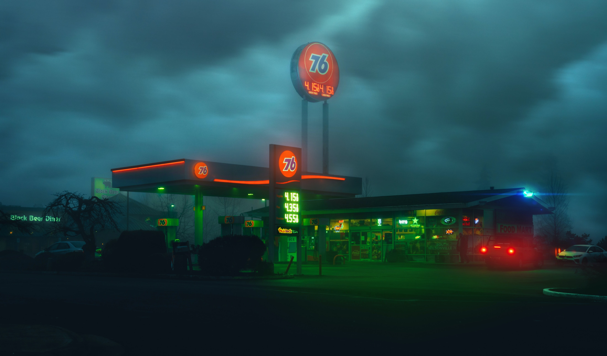

Exhaust & Pollution
The Haze of Smog
Further Resources
If you're interested in learning more about photochemical smog, we invite you to check out the following resources:
National Geographic: a friendly introduction to smog with a list of various solutions
South Australian Environment Protection Authority: straightforward and comprehensive pdf
University of Calgary: primarily explores the formation and composition of smog relatively briefly
Science Direct: highly scientific with excerpts from many textbooks
Britannica: your standard Britannica webpage, take it or leave it
Libre Texts: a brief progression of molecular changes in the formation of smog
Photochemical Smog
Photochemical smog is a type of air pollution produced when sunlight reacts with automobile exahust. It's common in cities and industrial areas, and is worse in warmer months as well as cities near mountains, as smog builds up rather than spreading out. While the term "smog" was first coined in the 1900s as a combination of smoke and fog, photochemical smog was not understood until the the 1950s.
Washington generally has good Air Quality Index levels, but recent, pollution measures have been rising due to population growth, new industry, construction, and non-traffic based causes such as the increased frequency and severity of wildfires.
Composition of Smog
Photochemical smog is composed of ozone, nitrogen diozide, nitrogen oxides, peroxyacetyle nitrate, and volatile oragnize compounds (VOCs).
VOCs are released gases that might cause harm to living beings or the atmosphere, and can be found in gasoline, paints, and cleaning solvent, among other solutions.
Nitrogen oxides are introduced to the atmosphere through car exhaust, coal power plants, and factory emissions.
Normally, nitrogen dioxides react with UV rays in sunlight to decompose intro nitrogen oxide and lone oxygen atoms. These lone oxygens combine with dioxide to form ozone. However, excess nitrogen oxides are added directly to the atmosphere through exhaust and related pollution.
When reactive VOCs in the atmosphere turn nitrogen oxides into nitrogen dioxide without breaking down ozone, smog and ozone are built up at ground-level.
Effects of Smog

Photochemical smog has many negative effects. It is known to kill plants and can turn the sky brown, gray, or even yellow. It harms animals and humans alikes.
- Short-term effects
- Respiratory irritations
- Coughing & wheezing
- Pharyngitis
- Long-term effects
- Problems with lung function
- Increased risk of of asthma
- Respiratory illnesses
- With other air pollution
- Kills over 3 million people per year
Case Study: Great London Smog
A severe example of photochemical smog is the Great London Smog, lasting from December 5th to 9th in 1953.
The Great London Smog was triggered by vehicle exhaust pollution, smoke from burning coal, industrial factories. It was enahnced by an anticyclone that caused cold to be trapped under warmer air which mixed with smoke and formed a thick, yellowish layer of smog.
There were extreme health effects, including 12,000 deaths. The majority of these were due to respiratory tract infections, an example of one of many respiratory illnesses caused by smog.
The Great London Smog inspired multiple steps for change. This included the London Clean Air Act, which established smokeless zones and began transitioning people to smokeless solid fuel, gas, and electricity.
Solutions to Smog
Since photochemical smog is created by VOCs from sources such as car exhaust and coal power plants, the ideal way to reduce smog is to limit these outputs.
Currently, many governments aim to encourage reduction of fossil fuels by utilizing and restrictions. In the U.S., for example, there are restrictions on what chemicals are released by factories, and when.

Ideally, all people would drive electric cars as opposed to gasoline-fueled cars. Intermediately, vehicles can be equipped eith catalytic converters that reduce toxic gasses and pollutants in exhaust, thus reducing the amount of photochemical emissions.
An easy step anybody can take is to pump gas at night to limit VOC exposure with sunlight and oxone formation, and take proper care of their vehicles and rideshare to reduce total emissions.
Case Study: Smog & Infrastructure
Increasing smog has led architects and environmental scientists to think about designing buildings that can help clean smog out of air.
| Torre de Especialidades, Mexico City | This artistic structure has tiles with titanium dioxide. When UV rays hit, the reaction converts nitrogen oxide into the safer calcium nitrate, water, and carbon diozide, reducing the formation of smog. |
|---|---|
| Palazzo Italia, Milan | This building also uses titanium dioxide tiles by mixing titanium dioxide into concrete, for a similar effect to the Torre de Especialidades. |
| Smog Free Tower, Beijing | A 7-meter outdoor air purifier. When airborne particles are sucked inside, they receive a positive charge. This causes them to stick to a negatively charged dust-removal plate. The clean air is blown out the other side. These towers have now been instated in many countries. |
Video: Photochemical Smog
(as explained by Kinetic School)
Published in January 2019, this video by Kinetic School gives a hearty introduction to photochemical smog with a particular emphasis on understanding the chemistry of smog.
If you found the Composition of Smog section interesting and would like to learn more about how the different molecules fit together, this video is an excellent and quick resource.